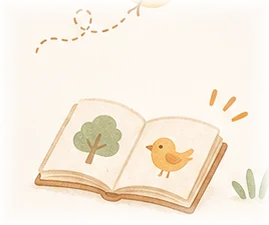

손끝으로 느껴요
재료를 직접 만져 보고, 눈으로 살펴보며 촉감과 모양의 차이를 느낍니다.
그림책을 읽고 노래를 부르며, 손끝으로 새로운 재료를 탐색합니다. 브릿지 원더는 아이가 놀이 속에서 영어의 소리와 표현을 편안하게 만날 수 있도록 돕습니다.
인스타그램에서 원더 만나기2027년 1월 체험수업 예정 · 정규 수업은 3월 시작 예정


발달 단계에 맞는 놀이
보호자와 함께하는 수업
여유 있는 탐색 시간
아이의 속도를 존중하는 운영
처음부터 영어로 대답하거나 단어를 외울 필요는 없습니다. 아이가 좋아하는 노래를 듣고 그림책을 살펴보는 동안, 선생님은 상황에 맞는 짧은 영어 표현을 들려줍니다.

공간을 준비하는 모습부터 그림책과 오감놀이까지, 브릿지 원더의 소식을 사진과 영상으로 전해 드립니다.

수업을 준비하는 모습과 새로운 놀이 소식은 공식 인스타그램에서 확인해 주세요.
아이가 손을 뻗고, 고르고, 다시 시도할 수 있도록 충분히 기다립니다.
재료를 직접 만져 보고, 눈으로 살펴보며 촉감과 모양의 차이를 느낍니다.
그림책 속 장면을 살펴보고 익숙한 노래를 들으며 짧은 영어 표현에 귀를 기울입니다.
관심이 가는 재료를 아이가 직접 고를 수 있도록 돕고, 발달에 따라 활동 방법을 달리합니다.
매달 같은 그림책·노래·감각놀이 주제를 경험합니다. 선생님은 아이의 발달에 맞춰 활동과 상호작용 방식을 조정합니다.
보고, 듣고, 만져요
움직이며 익숙해져요
소리와 반응을 나눠요
스스로 고르고 비교해요
그림책과 표현을 연결해요
* 위 구간은 프로그램 안내를 위한 기준이며, 실제 분반은 아이의 발달과 운영 일정에 따라 달라질 수 있습니다.
쌀가루와 감자전분, 채소와 계절의 자연 소재를 수업 주제에 맞게 준비합니다. 아이가 직접 만지고 살펴볼 시간을 충분히 마련합니다.
재료와 수업 구성 보기쌀가루, 감자전분, 과일·채소 등 주제별 재료를 활용한 감각 경험

계절의 질감과 색, 모양을 만나는 자연 탐색과 표현 활동
재료와 활동은 계절, 수업 주제, 아이의 월령에 맞춰 준비합니다. 식재료는 감각 탐색용이며 먹는 활동은 하지 않습니다. 알레르기나 민감한 재료가 있다면 예약 전에 알려 주세요.
새로운 공간에서 선생님과 인사하고, 편안한 분위기 속에서 재료를 만져 봅니다.
겨울을 떠올리게 하는 색과 질감을 살펴보고 노래를 함께 듣습니다.
여러 색을 살펴보고 마음에 드는 것을 고르며 놀이를 이어 갑니다.
궁금한 점을 먼저 문의해 주세요. 아이의 월령과 관심사를 듣고 참여할 수 있는 수업을 함께 살펴봅니다.
아이의 월령과 희망하는 시기를 남겨 주세요.
담당자가 프로그램과 참여 가능한 일정을 안내해 드립니다.
참여가 확정되면 준비물을 안내해 드립니다.
※ 온라인 상담 신청만으로 예약이 확정되거나 결제가 진행되지는 않습니다.